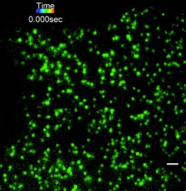
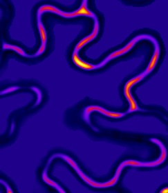
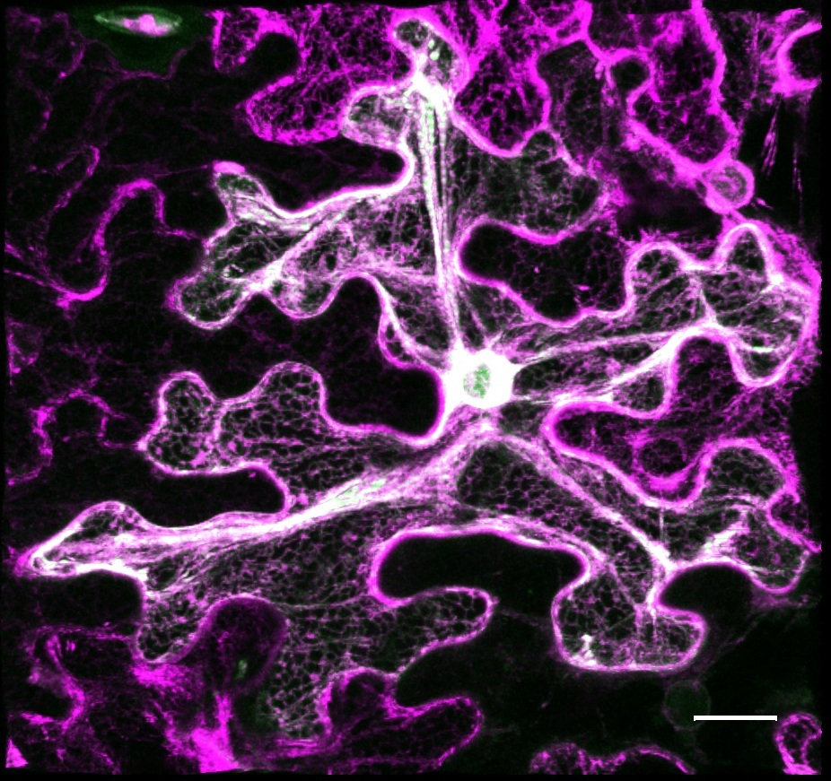
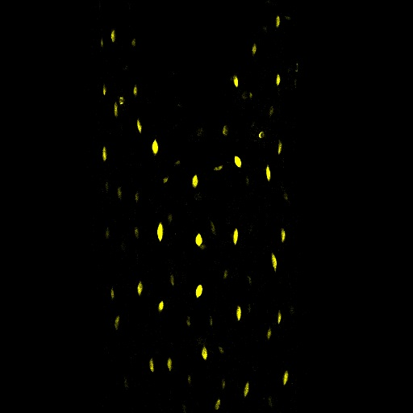
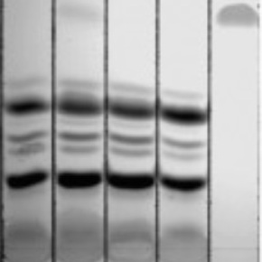
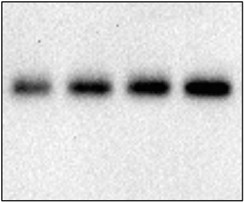
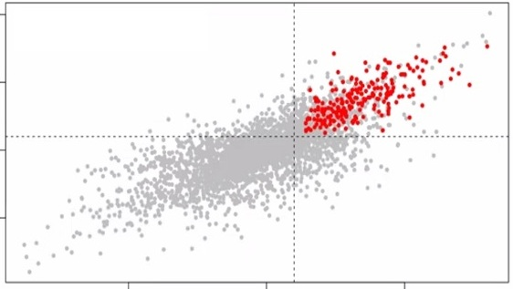
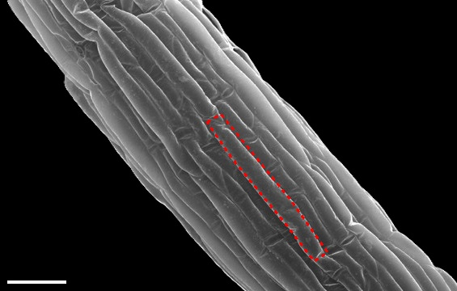

TIRF imaging & particle tracking
Live-cell imaging of membrane proteins and their nanoscale dynamics.
Science & Discovery
We investigate how lipid metabolism, protein lipidation, and dynamic plasma membrane organization regulate cell signaling, plant development and responses to environmental change.

1 · Lipid metabolism
Beyond its classic role in seed oil storage, triacylglycerol (TAG) biosynthesis is emerging as an important regulator of plant growth and stress responses. We investigate how TAG metabolism helps plants adjust their growth and architecture to changing environmental conditions.
Our work shows that high temperature induces the TAG biosynthetic enzyme DGAT2, which restrains auxin-driven hypocotyl elongation and modulates membrane lipid order. Auxin, in turn, suppresses DGAT2, revealing a reciprocal regulatory relationship. We are extending this work to understand how lipid metabolism connects membrane organization with hormone signaling across environmental responses.
Read the related publication2 · Membrane organization
Proteins and lipids in the plasma membrane are organized into dynamic nanoscale domains, known as plasma membrane nanodomains. Their composition and organization respond to developmental and environmental cues and can shape the activity of signaling components.
We combine live-cell imaging, TIRF microscopy and single-particle tracking with molecular genetics and quantitative analysis to investigate how nanodomains are organized and how they contribute to plant cell signaling, polarity and growth.
Read our nanodomain review
3 · Protein S-acylation
Protein S-acylation (often referred to as palmitoylation) is a reversible lipid modification in which fatty acyl groups are attached to cysteine residues through thioester bonds, a process catalyzed by DHHC-domain protein S-acyltransferases (PATs). By influencing protein membrane association, subcellular localization, interactions with membrane nanodomains, and trafficking between cellular compartments, S-acylation provides a dynamic mechanism for regulating signaling at the cell surface.
Although many components of plant hormone signaling pathways act at or near membranes, how S-acylation shapes hormone responses and membrane organization remains incompletely understood. Our lab investigates how protein S-acylation regulates auxin signaling and how it may integrate hormonal and environmental cues. We aim to understand how this dynamic modification influences plant architecture, growth responses to neighboring plants, and adaptation to changing environmental conditions.
Our toolkit
We combine advanced imaging, biochemical assays and quantitative analysis to investigate plant cell signaling.
Imaging & quantitative analysis

Live-cell imaging of membrane proteins and their nanoscale dynamics.

Fluorescence-based approaches to study molecular proximity and signaling.

Visualizing where signaling proteins are localized within plant cells.

Quantifying spatial relationships between fluorescently labeled components.

Imaging plant cell morphology and fluorescent signals.

Analyzing DGAT2 promoter activity across plant tissues and cells.

Fluorescence imaging to investigate the physical properties of membranes.

Observing plant cells under controlled experimental conditions.
Biochemistry & molecular assays

Investigating lipid metabolism and its contribution to plant responses.

Testing molecular activities and biochemical processes in plant signaling.

Examining protein phosphorylation in signaling pathways.

Protein-level analysis to explore components of signaling networks.
Phenotyping & computational analysis

High-resolution views of plant surface and cellular morphology.

Comparative analyses of genes and proteins across species.
Research support
We gratefully acknowledge the support of the following funding sources: